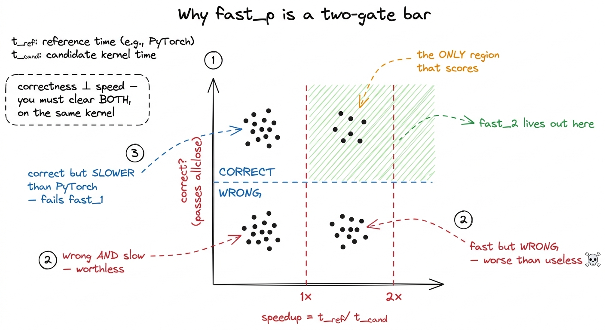
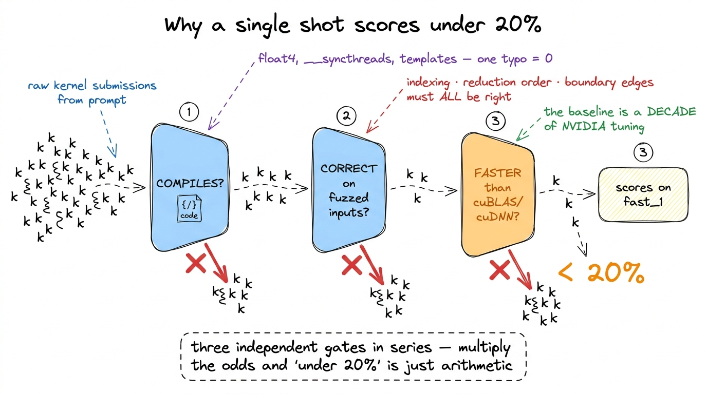
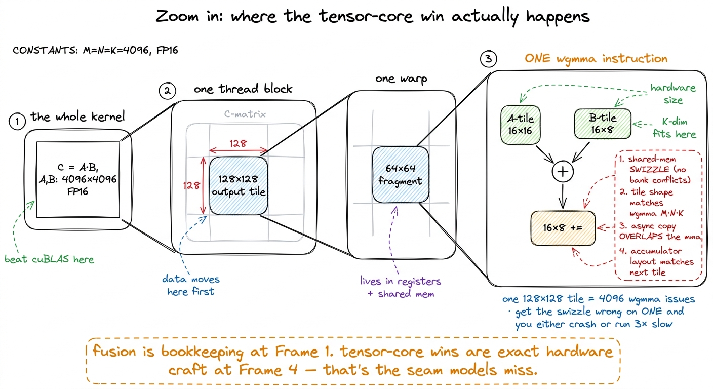
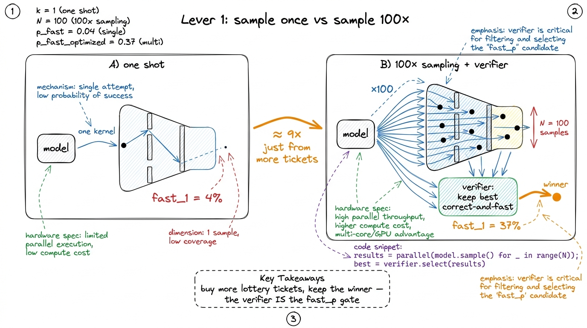
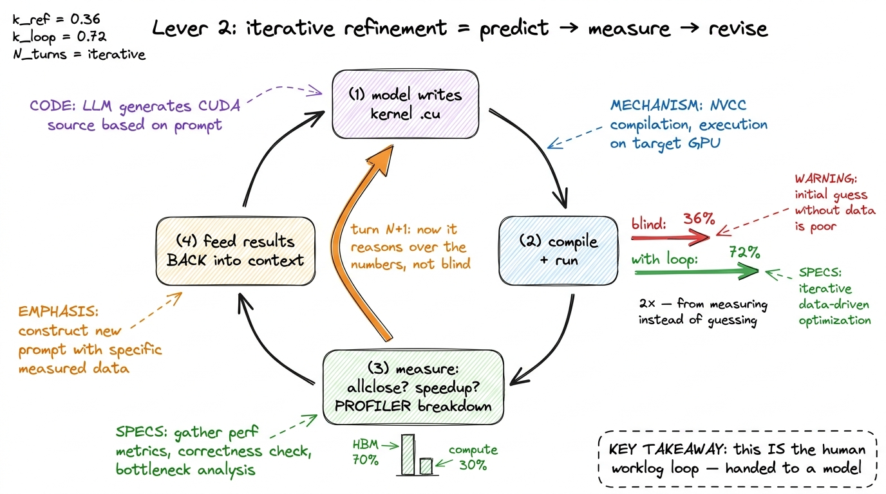
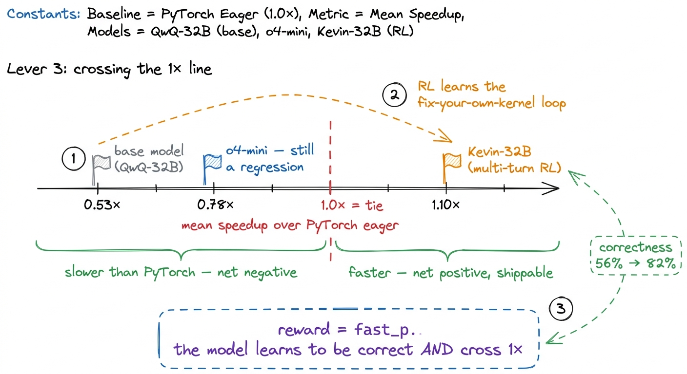

KernelBench & measuring AI kernels
Everything on this site so far has been a human closing the gap to cuBLAS by hand, one measured kernel at a time. We wrote a naive matmul, profiled it, found it was memory-starved, tiled it into shared memory, vectorized the loads, and watched the number climb toward the library. Every step was a person forming a hypothesis, running a profiler, reading the evidence, and trying again. So the natural next question — the one this article exists to answer — is simple to say and hard to settle:
Can a language model do that? Can you hand a model a PyTorch layer, ask it for CUDA, and get back a kernel that is both correct and faster than the framework it was handed?
Before we can even ask that seriously, we need to slow down and agree on what "faster" and "correct" mean, and how you would measure them without fooling yourself. Because it turns out the measurement is the interesting part. Most of this article is about a benchmark called KernelBench and a single metric it introduced, fast_p, that refuses to be gamed. Once you understand the metric, the headline result — frontier models write a correct-and-faster kernel less than 20% of the time — stops being surprising and starts being the number you would have predicted. And then we get to the good part: what actually closes that gap.1 KernelBench is from Anne Ouyang, Simon Guo, and collaborators at Stanford (Hazy Research). The framing, the fast_p metric, and the later results in this article follow their paper and Simon Guo's 2025 writeup on automated GPU kernel generation.
Let me start from zero and build up, because if you have never thought about how you would grade a machine that writes GPU code, the design choices here are genuinely clever and worth seeing derived rather than asserted.
First, what is the task, exactly?
Let me make the setup concrete before we abstract it. KernelBench hands the model a small PyTorch nn.Module — a few lines of Python that define a forward pass. Maybe it is a single matmul. Maybe it is a convolution followed by a bias add and a ReLU. Maybe it is a whole Vision Transformer block. That module is the reference: it says exactly what the correct answer is, for any input you feed it.
The model's job is to return a different module that computes the same function, but whose forward is implemented in inline CUDA — a .cu string that gets compiled when the module loads, wrapped in a thin layer of Python so PyTorch can call it. Same inputs in, same outputs out, ideally faster.
That is it. In one sentence: PyTorch in, CUDA out. The fancy word for this is transpilation — translating a program from one language (PyTorch, the specification) into another (CUDA, the target) while preserving its meaning.
 figure rendering · The KernelBench contract. The PyTorch module is simultaneously the spe
figure rendering · The KernelBench contract. The PyTorch module is simultaneously the speNow here is the first thing worth stopping on. Why use PyTorch as the specification? Why not just write a prompt in English — "write me a fast fused attention kernel"?
Think about what English leaves unsaid. What layout are the tensors in, row-major or column-major? What precision — FP32, FP16, BF16? Is there a mask? What are the exact shapes? A natural-language prompt hides a dozen decisions, and if the grader and the model disagree on any of them, you cannot tell a wrong kernel from a kernel that solved a slightly different problem. A PyTorch module leaves none of that unstated. The shapes are concrete, the dtypes are concrete, the math is concrete. Ambiguity is gone.
Using PyTorch as the spec quietly solves two more problems for free. Correctness becomes checkable — you can run both modules on random inputs and compare the numbers, so you never have to hand-write a test suite. And the baseline is honest — the reference PyTorch implementation is the thing to beat, and PyTorch is not a strawman. Under the hood it dispatches to cuBLAS, cuDNN, and torch.compile, which are among the most tuned pieces of software on the planet. Beating them is real work, not a participation trophy.
Hold onto that last point, because it is the whole reason the headline number is what it is. When we say "faster than PyTorch," we do not mean faster than a Python for-loop. We mean faster than a decade of NVIDIA's best engineers.
Three levels, three different kinds of hard
The problems come in three tiers. It would be easy to assume these are just "small, medium, large," but that misses the design. Each level tests a different skill, and a model can be good at one and hopeless at the next.
Level 1 — single operators. One primitive, standing alone: a matmul, a convolution, a layernorm, a softmax. Here the model competes head-to-head with a library kernel that NVIDIA or the PyTorch team has already tuned to death. There is no fusion to exploit and nowhere to hide. You win only by writing a genuinely excellent kernel for that one operation. This is the level where our whole GEMM ladder lives — and remember, even a strong hand-written SGEMM, after many rounds of profiling, only reached 93.7% of cuBLAS. It was slower than the library. So on Level 1, "faster than PyTorch" is a bar the reference often already clears against expert humans.2 This is why Level 1 is deceptively brutal for models. The reference isn't naive PyTorch Python loops — it dispatches to cuBLAS/cuDNN. To be faster than the reference on a single matmul, a model has to out-engineer a mature library, not out-engineer a for-loop. Most expert humans can't do that either.
Level 2 — operator sequences. Now several ops in a row: conv → bias → scale → ReLU, or a small block of element-wise work wrapped around a matmul. Here something changes. Each of those ops, run individually, is memory-bound — it reads a tensor from HBM, does a trivial amount of arithmetic, and writes the result back. Run them back-to-back in eager mode and the intermediate tensors bounce out to HBM and back between every single step. The win is fusion: collapse the whole chain into one kernel so the intermediates never leave the chip. This is exactly the memory-movement lever from the three regimes — the reference is bandwidth-bound, and you beat it by deleting round-trips to memory, not by doing less math.
Level 3 — full architectures. Complete model components: a Vision Transformer block, a Mamba block, a full attention layer. Dozens of ops, real data-dependent control flow, several bottlenecks living in different regimes at the same time. The model cannot pattern-match a single kernel here. It has to discover where the time is actually going and optimize the part that matters — the same predict-then-measure discipline a human uses, except the model has no profiler in the loop by default. It has to guess where the time goes.
 figure rendering · The three levels climb from writing one good kernel, to fusion, to who
figure rendering · The three levels climb from writing one good kernel, to fusion, to whoNotice how the nature of the win shifts as you climb. Level 1 is a pure kernel-craft contest. Level 2 is a memory-traffic accounting problem. Level 3 is a profiling-and-triage problem. Keep that in mind, because it will explain which problems the models could and could not solve — the failures are not random.
Now, how do you grade this without fooling yourself?
Here is the sentence that makes KernelBench serious, and I want you to sit with it: a correct-but-slow kernel is useless, and a fast-but-wrong kernel is worse than useless.
Most code benchmarks score one thing: correctness. Pass the unit tests, get the point. That is a single-objective bar, and single-objective bars have a fatal flaw — they saturate. Once models learn to pass the tests, the number pins at 100% and stops telling you anything. Worse, a correctness-only bar quietly rewards the wrong behavior for kernels. A kernel that is correct but no faster than PyTorch scores full marks, even though it did nothing useful.
Kernel generation is inherently two objectives at once. You must be correct, and you must be faster than what you already had. The metric has to enforce both, and it has to enforce them in a way you cannot cheat around.
That metric is fast_p.
Building fast_p from a by-hand example
Let me define it with the smallest possible example, so nothing comes from the sky.
Suppose the benchmark has just 5 problems. For each one, the model emits a kernel, and we run two checks.
Check one — correctness. We take the reference module and the candidate module, feed them the same random inputs, and compare the outputs. We do not demand they be bit-for-bit identical — that would be unreasonable, because a kernel that reorders a sum or uses TF32 will legitimately differ in the last few bits. Instead we use allclose with a tolerance: outputs must match within a small atol (absolute tolerance) and rtol (relative tolerance). And we do not just try one input — we fuzz it, running several random inputs, because a kernel with a boundary bug might get lucky on one input and fail on the next.3 The tolerance is a real design knob, not a footnote. Set it too loose and you start rewarding kernels that are actually wrong but "close enough" on the test inputs. Set it too tight and you reject legitimate kernels that merely reordered a floating-point reduction. KernelBench tunes it to accept honest FP reordering while catching real numerical bugs — the same judgment call a performance engineer makes when they diff a new kernel against the old one in practice.
Check two — speed. We time the reference forward pass, time the candidate forward pass, and take the ratio:
speedup = t_reference / t_candidate
If the candidate takes half as long, speedup = 2×. If it takes longer, speedup < 1×.
Now suppose our 5 kernels came out like this:
- Problem A: wrong output. (fails correctness)
- Problem B: correct,
speedup = 0.7×(slower than PyTorch) - Problem C: correct,
speedup = 1.3× - Problem D: correct,
speedup = 2.5× - Problem E: miscompiled, never ran. (fails correctness)
To compute fast_p, we ask, for a given threshold p: for how many of the 5 problems was the kernel correct AND at least p× faster? Then we report that as a fraction.
fast_0= correct AND at least 0× faster = just correct, any speed. Here B, C, D pass → 3/5 = 60%.fast_1= correct AND strictly faster than PyTorch (speedup > 1×). Here C and D pass; B is correct but slower, so it fails. → 2/5 = 40%. This is the headline gate: did you actually beat PyTorch?fast_2= correct AND more than twice as fast. Only D passes. → 1/5 = 20%.
 figure rendering · fast_p worked out by hand. As you raise p, you demand a bigger speedup
figure rendering · fast_p worked out by hand. As you raise p, you demand a bigger speedupDo you see what p is now? It is a dial — the speedup you demand before a kernel counts. And sliding that dial is the entire point of the metric.
Why the dial is unfoolable
Here is the elegant part. There are exactly two ways a bad system could try to cheat a kernel benchmark:
- Emit kernels that are correct but slow. On a correctness-only benchmark, this scores full marks. On
fast_pwith anyp ≥ 1, every one of them fails, because they never clear the speed gate. (That was problem B above.) - Emit kernels that are fast but wrong. These fail the correctness check first, before we ever look at speed. (Problems A and E.)
The beautiful thing is that these two failure modes are orthogonal — correctness has nothing to do with speed, and speed has nothing to do with correctness. So a system cannot trade one for the other. It cannot buy a higher score by being fast-and-wrong, and it cannot buy one by being correct-and-slow. It has to actually clear both gates on the same kernel to score at all. And by reporting the whole fast_p curve rather than a single accuracy number, the benchmark makes it obvious when a system is only clearing the low bars.

figure rendering · fast_p as a two-gate filter. Only the correct-and-faster quadrant counThis is why fast_p is the right lens for the question we started with. It is not asking "can a model write CUDA that compiles?" It is asking "can a model write CUDA that a working engineer would actually ship?" — and shipping means correct and faster than what you had.
The number: under 20%
Now the result that motivated this whole line of work. Point frontier language models at KernelBench, ask for a single kernel per problem, and score fast_1. Across all three levels, the models produced kernels that were correct and faster than PyTorch eager less than 20% of the time. Four out of every five attempts either failed to compile, produced wrong numbers, or produced right numbers more slowly than the framework they were trying to beat.
When I first saw that number I had two reactions in sequence. The first was "wow, that's low." The second, after thinking about what has to go right, was "wait — that's about what it should be." Let me walk you through the second reaction, because it is the whole point.
Count the things that must all go right for one attempt to score on fast_1:
- The CUDA has to compile. Real kernels use
float4vectorization, shared-memory tiling,__syncthreads()barriers, boundary guards for tensor edges. Every one of those is a place for a subtle type error or a missing semicolon or a wrong template parameter to kill the entire attempt. One typo and you score zero on this problem. - It has to be numerically correct on fuzzed random inputs. That means the indexing arithmetic is right, the reduction order does not overflow, and the boundary handling covers the ragged edges — not just "looks plausible," but correct on inputs the model never saw.
- It has to beat a tuned baseline. And on Level 1, that baseline is
cuBLAS/cuDNN. We spent this entire site watching a human take many careful, profiled steps to get a hand-written GEMM to 93.7% ofcuBLAS— and still lose. Asking a model to emit text that clears that bar on the first try, with no profiler feedback, is a genuinely hard ask.
Three independent gates, and you must pass all three at once, on the first shot, with no feedback loop. Multiply three modest probabilities together and "under 20%" is not a mystery — it is arithmetic.

figure rendering · The three gates in series. Compile, then be correct on inputs it neverThe failure profile is a fingerprint
Here is the part I find genuinely useful, more than the headline number. The models did not fail uniformly. They failed in a shape, and the shape tells you something.
Models did relatively better on Level 2 fusion and relatively worse wherever the win required driving the tensor cores. Read that back against the "three kinds of hard" from earlier and it clicks. A Level-2 fusion win is a memory-movement win — "delete a round-trip to HBM." That is a pattern you can more or less learn from reading a lot of code, and the arithmetic tolerance for getting it wrong is forgiving. But beating a matmul means feeding the tensor cores well: orchestrating wgmma instructions, swizzling shared memory to avoid bank conflicts, overlapping async copies with computation, all with no margin for error. That is exactly the kind of hardware-specific intrinsic work that a human worklog spends its hardest days on — and it is precisely where the models fell down.4 This is a genuinely useful signal about where human effort still has the biggest edge. Memory-movement optimizations are more learnable from text; deep hardware-intrinsic optimizations (TensorCore utilization, wgmma, swizzling) are not, at least not yet. If you want to add value on top of a model today, that's the seam to work in.
To see why the tensor-core seam is so much harder than the fusion seam, it helps to zoom all the way in — past the whole kernel, past one block, down to the single innermost step where a model has to get it exactly right. A fusion win lives at the level of "which tensors touch HBM," a coarse bookkeeping question you can reason about by reading code. A tensor-core win lives four levels down, inside one warp, in the exact shape of one wgmma instruction and the exact byte-layout of the shared-memory tile it reads. That is where the model has no intuition and no margin.

figure rendering · Zooming from the whole matmul down to a single wgmma. The fusion winsSo "models can't write kernels" is the wrong summary. The right summary is: models can already do the memory-movement wins, and mostly cannot yet do the tensor-core wins. That is a fingerprint, not a verdict.
Now for the good part: what closes the gap?
If the story ended at "under 20%," it would be a cute cautionary tale and nothing more. But that low number is a starting point, and the far more interesting result is the slope — how fast the number moves once you stop asking the model for a single blind guess and start giving it the same tools a human uses. This is where the article stops being about a benchmark and starts being about the predict-then-measure loop that this whole site is built on, handed to a model.
Let me walk through the levers in the order they matter, and do the napkin math on each.
Lever 1 — just try more times (parallel sampling)
The simplest idea: instead of one kernel per problem, generate many and keep the best correct one. If a single attempt clears all three gates with probability, say, 4%, and you draw 100 independent attempts, the chance that at least one clears is 1 − (1 − 0.04)^100 ≈ 98% — assuming independence, which is optimistic but directionally right. You are not making the model smarter; you are buying more lottery tickets and keeping the winner.
Does it work? Concretely: DeepSeek-V3 with 100× sampling went from 4% → 37% on fast_1 at Level 2.5 The independence assumption is too rosy — a model's 100 samples are correlated, so you never get the full theoretical lift. But even the correlated reality took Level-2 fast_1 from 4% to 37%, roughly a 9× jump purely from sampling. That's the cheapest lever there is, and it's why "just sample more" is always the first thing a serious kernel-gen system does. That is a nearly 9× improvement on the headline gate, from nothing but repetition and a verifier that picks the winner. The verifier here is exactly fast_p's two gates — is it correct, is it fast — used to select among samples, not just to score them.

figure rendering · Parallel sampling. The model does not get smarter; you simply draw manLever 2 — let the model see the profiler (iterative refinement)
Sampling is buying more blind guesses. The next lever removes the blindness. This is the one that maps directly onto everything a human does on this site.
Recall the human loop: write a kernel → run it → the compiler tells you if it built → allclose tells you if it is correct → the profiler tells you where the time went → you form a new hypothesis and try again. The model, by default, gets none of that feedback. It writes text and moves on.
Iterative refinement closes that loop. You run the model's kernel, then feed the results back into the context: did it compile, did it pass allclose, what was the measured speedup, and — critically — the profiler's breakdown of where the time went. Now the model is not guessing in the dark. It is doing predict → measure → revise, the same loop the human does, just with the profiler output pasted into the prompt instead of read on a screen.
The effect is dramatic. DeepSeek-R1 with iterative refinement went from 36% → 72% on fast_1 at Level 2 — a 2× jump on top of an already-decent base, purely from letting the model measure instead of guess.6 R1 is a reasoning model, which matters here: iterative refinement gives it error messages and profiler output to reason over, turn by turn. A non-reasoning model handed the same feedback improves less, because the value isn't just having the feedback — it's chaining several rounds of "the profiler says X, so I'll try Y" without losing the thread.

figure rendering · Iterative refinement. The model gets the compiler error, the allcloseNotice this is the same figure — predict, measure, revise — that a human runs. The model is not doing something exotic. It is finally being allowed to measure.
Lever 3 — train the loop in, don't just prompt it (multi-turn RL)
Refinement-by-prompting works, but the model was never trained to be good at that multi-turn loop. The next lever bakes the loop into the weights. You use reinforcement learning where the reward is — of course — fast_p: correct-and-fast gets rewarded, and the model learns, over many turns, to fix its own kernels.
The tricky part is that naive multi-turn RL tends to collapse — the model finds a degenerate strategy and stops exploring. A model called Kevin-32B (from Cognition AI, trained on top of QwQ-32B) got the multi-turn training stable, and the results are the clearest "the loop can be learned" evidence we have. Kevin improved from its base model's 0.53× mean speedup over PyTorch eager to 1.10× — crossing the crucial 1× line, meaning on average it is now faster than PyTorch, not slower. Its correctness rate rose from 56% → 82%. And for comparison, OpenAI's o4-mini on the same setup reached 0.78× mean speedup — still below 1×, i.e. still slower than PyTorch on average.7 Crossing 1× mean speedup is a bigger deal than it looks. A mean above 1 means the average generated kernel beats eager PyTorch — the system is net-positive to run. o4-mini's 0.78× means the average kernel is still a regression. The gap between 0.78× and 1.10× is the gap between "a demo" and "a tool you'd actually put in a pipeline."

figure rendering · Multi-turn RL bakes the refinement loop into the weights, with fast_pLever 4 — search the space of ideas (evolutionary methods)
The last lever treats kernel optimization as a search problem. Instead of one refinement chain, you keep a whole population of candidate kernels, mutate and recombine the promising ones, and let fast_p be the fitness function that decides who survives. This is the AlphaEvolve-style idea — tree-structured exploration of optimization strategies, with fast_p as the selection pressure. It is more expensive than a single chain but explores a much wider space of ideas, and it is how several of the strongest published results are produced.
Stack these levers and the picture inverts. The "under 20%" from a single blind shot becomes, with sampling and refinement and training, systems that are net faster than PyTorch on average. The starting score was never the story. The slope was the story.
Where this actually lives in production
None of this is a paper-only curiosity, and it is worth grounding so it never feels academic. A few real anchors:
- KernelLLM-8B — the first known post-trained model aimed squarely at this task, a collaboration involving PyTorch/FAIR. Post-training on kernel data, not just prompting.
- Kevin-32B — the Cognition multi-turn RL model above, the concrete proof that the refinement loop can be trained in rather than prompted.
- KernelBook — the largest verified dataset of PyTorch-to-kernel pairs mined from real code, which is what makes post-training these models possible at all.8 A lot of the training data comes from running
torch.compileand capturing the Triton it emits, giving verified (PyTorch → fast-kernel) pairs at scale. It's a nice bootstrap: the compiler you're trying to beat becomes the teacher that generates your training data. - GPU MODE leaderboards — 60k+ human and model kernel submissions across competitions, spanning Hopper (H100/H200) and even AMD MI325X, so this is being measured on the hardware production actually runs on.
The through-line is that fast_p is not just a scorer sitting off to the side. It is the reward signal for the RL, the fitness function for the evolutionary search, and the verifier for the sampling. The metric we spent this article deriving is the engine that drives every method that closes the gap. Get the measurement right and everything downstream — sampling, refinement, training — has something honest to optimize against.
Why this is the right benchmark, and what it teaches
It would be easy to read "under 20%" as "models can't write kernels" and stop. That is the wrong lesson twice over. It is wrong because the number climbs the moment you hand the model a feedback loop, and it is wrong about what the benchmark is even for.
The right lesson is about the measurement. A correctness-only benchmark would have reported a cheerful, misleading number — "look, the model writes CUDA that runs!" — and taught everyone downstream to optimize for the wrong thing. fast_p reports a low, honest number, because it insists on the exact two-objective bar a real kernel engineer lives under every single day: ship something correct, and ship something that is genuinely faster than what you already had.
And that honesty is precisely what makes it a good target. A metric you can climb by cheating teaches a model to cheat. A metric that only moves when the kernel is genuinely correct-and-fast turns every gain into a real gain — which is why the same metric can serve as a benchmark score, an RL reward, and a search fitness function without ever going soft. The predict-then-measure discipline we have practiced by hand across this whole site turns out to be the same discipline that lets a model climb this benchmark: it works because the thing being measured is the thing that actually matters.
The low starting score is not the story. The slope is. And the reason there is a slope — the reason "under 20%" becomes "net faster than PyTorch" — is that KernelBench measured the right thing in the first place. Get the measurement right, and everything else has something true to climb toward.